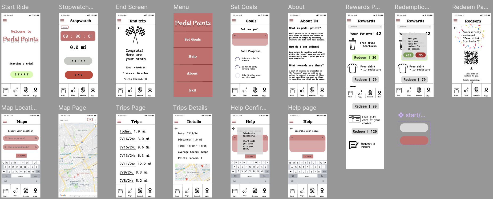

Pedal Points
Pedal Points is a solo project in which I was tasked to use Figma to create a prototype of an app to solve issues regarding climate change. The point of the app is for students at my university to track the miles that they bike on campus and have each mile convert to one reward point, which could then be used to buy a variety of items across campus. This program helps to lessen the damages from global warming by having less cars on campus, and thus, lowering carbon emissions in the area. The final prototype was created after creating three paper sketches and three smaller prototypes, which all got feedback from classmates.
